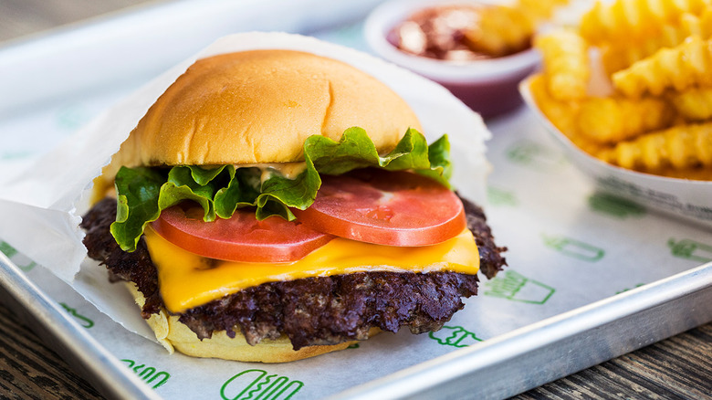

Odin Recipes
Burger
Description
How too make the best Cheeseburger, you have ever eaten.
This recipe is all you need to make the best burger on earth.
Ingredients
- Flour - 640g
- Water (room temperature) - 360ml
- Salt (fine) - 14g
- Yeast (dried or fresh) - around 0.2g to 0.5g
- 300g tin of plum tomatoes
- Tomato puree (optional) - a tablespoon
- Salt - sprinkling of table salt or sea salt
- Pepper - freshly ground black pepper
- Mozzarella - 2 x 125g bags of fresh Mozzarella balls
- Parmesan - about 30g
- Olive Oil - a few glugs
- Basil - hand full of fresh leaves
Steps
- Mix all the ingredients into a shaggy mass in a large bowl, starting by adding the water first. You can do this by hand or use a wooden spoon.
- Cover the bowl with cling film, a plastic carrier bag, or a damp cloth (if the cloth isn't damp the dough may dry out).
- Leave the dough to rest for around 1 hour (the technical term for this process is the Autolyse).
- Turn the dough out onto the counter and knead for around 5 minutes.
- Place the dough back into the bowl and cover
- Leave the dough to prove (in one big lump, don't worry about the shape) for around 20 hours.
- Divide the dough into 4 equal parts (250g each) using some kitchen scales and a knife (or dough scraper) Do this about 4 hours before you intend to cook the pizza (after about a 20 hour prove).
- Place each dough ball into a small bowhl and cover. Alternatively, use a large tupperware container with a lid, or two smaller ones.
- Leave the dough balls to prove again for about 4-6 hours.